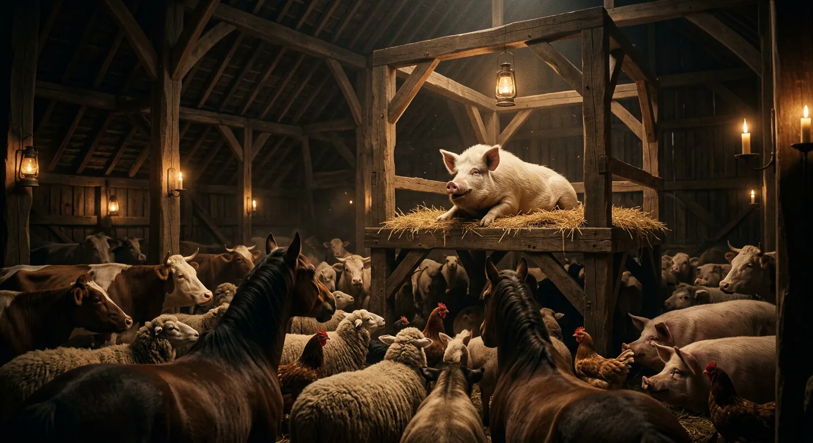
Old Major's Dream of Rebellion
On a night like many others at Manor Farm, Mr. Jones stumbled through his rounds with the carelessness of a habitual drunkard, locking the hen-houses but neglecting the popholes, his lantern swinging erratically as he lurched toward the farmhouse and the oblivion of sleep. Yet this particular evening would prove unlike any other, for the moment darkness claimed the bedroom window, a restless anticipation stirred through every building on the property. Word had spread among the animals that old Major, the venerable prize boar whose show name of Willingdon Beauty had long since given way to simpler address, wished to share the contents of a strange and portentous dream.
They gathered in the great barn with the solemnity befitting such an occasion—the three dogs arriving first, then the pigs claiming their places nearest the platform where Major lay ensconced upon his straw. Hens found the window-sills while pigeons took to the rafters, and the sheep and cows settled behind to chew their cud in patient contemplation. The cart-horses Boxer and Clover entered with deliberate care, their massive hooves placed thoughtfully lest they crush some smaller creature hidden in the bedding. Boxer, that tower of strength whose white-striped nose lent him an air of amiable dullness, possessed perhaps more loyalty and endurance than wit, while Clover carried herself with the tender authority of a mother many times over. Benjamin the donkey arrived too, that cynical old creature who found nothing in life worth laughing at yet harbored an unspoken devotion to his friend Boxer. The foolish mare Mollie came mincing in late, her ribboned mane demanding admiration, and the cat slipped between the horses to purr through proceedings she had no intention of heeding.
When all had settled—save Moses the raven, who slept elsewhere—Major began to speak, and his words fell upon the assembly like the first heavy drops before a storm. He spoke of lives that were miserable, laborious, and short. He spoke of endless toil rewarded only with the barest rations, of calves and foals and eggs stolen away to serve human appetites, of the cruel knife that awaited every creature once usefulness had been exhausted. The soil of England was rich enough to sustain them all in comfort, Major proclaimed, yet they starved and suffered because Man consumed without producing, taking everything while giving nothing but tyranny in return. Even Boxer, with all his tremendous strength, would one day be sold to the knacker when his muscles failed him.
The old boar's rhetoric swelled toward its inevitable conclusion: Rebellion. The overthrow of the human race. The animals must fix their eyes upon that distant justice and pass the message to generations yet unborn. And when the question arose whether rats and other wild creatures might be counted as comrades, the assembly voted overwhelmingly in their favour—though the cat, it was later discovered, had somehow contrived to vote on both sides.
Major laid down his commandments with prophetic weight: whatever walked on two legs was an enemy, whatever walked on four or possessed wings was a friend, and in their struggle against Man the animals must never adopt his vices nor tyrannize over their own kind. All animals were equal. Then, his voice grown hoarse with age and conviction, the old boar began to sing a half-remembered song from his earliest days—*Beasts of England*—a stirring anthem of liberation that painted visions of fruitful fields and broken harnesses. The animals took up the tune with wild enthusiasm, singing it through five times until the racket roused Mr. Jones from his stupor and sent a charge of shot thudding into the barn wall.
The meeting scattered, each creature fleeing to its sleeping-place, and within moments the farm lay silent once more—though something had awakened that no gunshot could put back to rest.
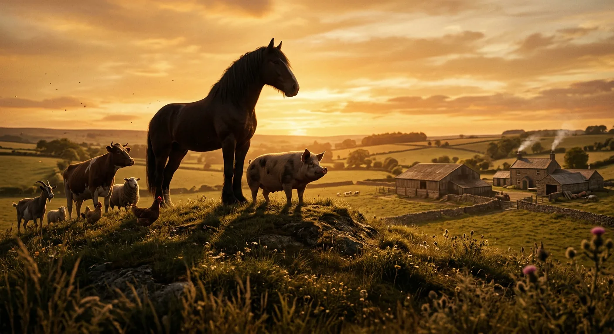
The Rebellion Begins
Three nights after delivering his stirring vision of revolution, old Major died peacefully in his sleep and was buried beneath the orchard trees, leaving behind a farm transformed in ways both visible and invisible.
The months that followed saw a quickening of secret purpose among the animals. Major's words had planted themselves most deeply in the minds of the pigs, who took up the mantle of organizing and instruction with a natural authority the others readily accepted. Chief among these emerging leaders were two young boars of distinctly different temperaments: Napoleon, a large and rather fierce-looking Berkshire with few words but a formidable talent for getting his own way, and Snowball, quicker of speech and more inventive, though lacking what some perceived as Napoleon's depth of character. Beside them worked Squealer, a small fat pig possessed of twinkling eyes and a shrill voice, whose remarkable gift for argument led the other animals to remark that he could turn black into white.
These three codified old Major's teachings into a complete philosophy they christened Animalism, holding clandestine meetings in the barn after Mr. Jones had drunk himself to sleep. Their work met considerable resistance—some animals spoke of loyalty to their master, others questioned why they should care about events beyond their own lifetimes, and the vain white mare Mollie worried only whether she might still have sugar and ribbons after the revolution. The pigs struggled too against Moses the raven, who preached of Sugarcandy Mountain, a paradise beyond the clouds where it was Sunday seven days a week and lump sugar grew on the hedges. Yet they found faithful disciples in Boxer and Clover, the two great cart-horses, who absorbed every teaching and led the singing of "Beasts of England" with tireless devotion.
The Rebellion, when it came, arrived with a swiftness none had anticipated. Mr. Jones had fallen into dissolution—losing money in a lawsuit, drinking heavily, neglecting his fields and his animals alike. On Midsummer's Eve he drank himself into a stupor at the Red Lion and did not return until the following midday, leaving the animals unfed through the night and into the next evening. When at last a desperate cow broke down the store-shed door and the starving beasts began helping themselves, Jones and his men came at them with whips. But the animals, acting with one accord though nothing had been planned, turned upon their tormentors with such fury that the men fled in terror down the cart-track, Mrs. Jones slipping away with a carpet bag and Moses croaking after her.
The farm was theirs. In the intoxication of freedom, the animals burned the whips and halters and nosebags, flung the cruel instruments of human dominion down the well, and sang "Beasts of England" seven times through before sleeping more soundly than they ever had. At dawn they raced to the pasture knoll and gazed upon their inheritance with wonder, then explored the farmhouse itself—that shrine of unbelievable luxury—resolving that it must become a museum where no animal would ever live. Manor Farm was painted over and rechristened Animal Farm, and upon the great barn wall Snowball inscribed the Seven Commandments of their new society: that two legs are an enemy, four legs or wings a friend, that no animal shall wear clothes, sleep in beds, drink alcohol, or kill another animal, and above all, that all animals are equal.
Yet even as Snowball rallied the animals to the hayfield with calls of honor and purpose, something curious occurred—the five buckets of fresh milk stood unattended, and when the workers returned that evening, the milk had quietly vanished, a small mystery that seemed, for the moment, hardly worth remarking upon.
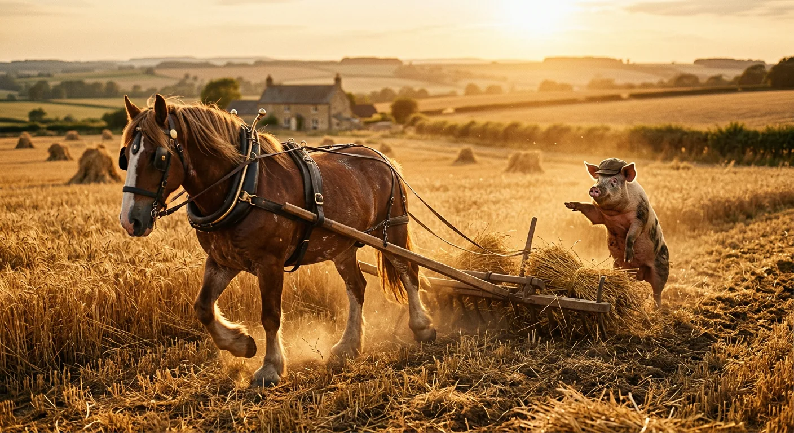
Harvest, Harmony, and Hierarchy Emerge
How gloriously that first harvest came in under the banner of Animal Farm! The creatures threw themselves into the work with a fervor born of freedom, sweating and straining to bring the hay home, and their efforts yielded a triumph beyond all expectation. The harvest proved the greatest the farm had ever known, completed in two days fewer than Jones and his men had ever managed, without a single stalk left to waste in the fields. True, the implements had been made for human hands and presented no small difficulty—no animal could wield a tool that required standing on hind legs—yet the pigs, with their superior cleverness, thought their way round every obstacle. They did not labor themselves, of course, but directed and supervised, and with their knowledge it seemed only natural that they should assume the leadership. Boxer and Clover harnessed themselves to cutter and horse-rake while a pig walked behind calling out commands, and every creature down to the smallest duck contributed what it could, carrying wisps of hay in their beaks through the summer sun.
The animals had never known such happiness. Every mouthful of food brought acute pleasure, for it was truly their own—produced by themselves, for themselves, not doled out by a grudging master. Boxer became the admiration of all, rising half an hour before the others each morning to put in volunteer labor, his answer to every setback that same steadfast motto: "I will work harder!" The quarreling and jealousy of the old days had nearly vanished, though Mollie proved somewhat unreliable about rising in the mornings, and the cat developed a remarkable talent for disappearing whenever work was to be done and reappearing precisely at mealtimes. Old Benjamin alone seemed unchanged, doing his work in the same slow obstinate way, offering only cryptic observations when questioned about whether life had improved.
Sundays brought rest and ceremony. Each week the animals hoisted a green flag bearing a white hoof and horn—Snowball's design representing the green fields of England and the future Republic of the Animals—then assembled in the barn for the Meeting, where resolutions were debated and the week's work planned. It was always the pigs who proposed the resolutions; the other animals understood voting but could never think of proposals themselves. Snowball and Napoleon proved most active in these debates, though they never seemed to agree on anything, opposing each other as if by principle.
Snowball busied himself with organizing committees and instituting reading classes. Most committees failed—the cat joined the Re-education Committee only to be observed inviting sparrows to perch upon her paw—but literacy spread across the farm in varying degrees. The pigs read perfectly; Benjamin could read as well but declared there was nothing worth reading; poor Boxer struggled to remember any letters beyond D. For the simpler animals, Snowball reduced the Seven Commandments to a single maxim: "Four legs good, two legs bad," which the sheep took up as a bleating chorus that could continue for hours.
Napoleon, meanwhile, showed no interest in committees. He declared the education of the young more important and quietly took possession of nine puppies whelped by Jessie and Bluebell, secreting them in a loft where the farm soon forgot their existence. And when the mystery of the missing milk was solved—it went daily into the pigs' mash, along with the windfall apples—Squealer appeared to explain that Science had proven these foods essential to brainworkers, and that without healthy pigs, Jones would surely return. The animals, certain of nothing so much as their hatred of Jones, acquiesced without further argument, and so the first quiet privileges of the new order were established, almost before anyone noticed they had begun.
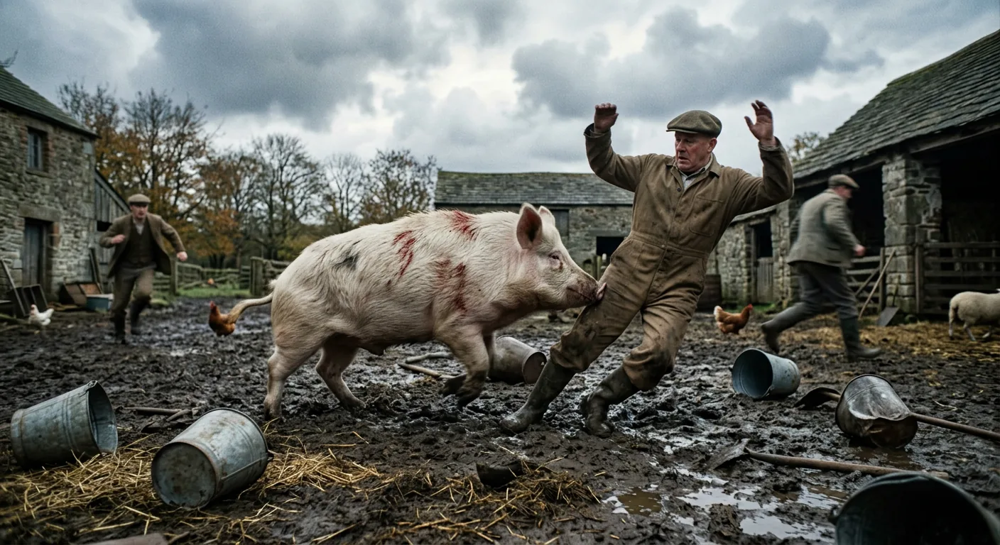
The Battle of the Cowshed
By late summer, word of the Rebellion had spread across half the county, carried on swift wings and whispered between hedgerows. Snowball and Napoleon dispatched flights of pigeons daily, those feathered emissaries charged with mingling among the animals of neighbouring farms, recounting the triumph at Manor Farm—though the animals insisted it be called Animal Farm now—and teaching all who would listen the stirring verses of *Beasts of England*.
Mr. Jones, meanwhile, had taken up residence of a different sort: a permanent seat in the taproom of the Red Lion at Willingdon, where he nursed his grievances and his ale in equal measure, bemoaning to anyone within earshot the monstrous injustice of being turned out by a pack of good-for-nothing beasts. The neighbouring farmers offered him sympathy enough in principle, though each privately calculated whether Jones's misfortune might not be turned to his own advantage. It was perhaps fortunate, then, that the two farms adjoining Animal Farm—Foxwood, large and neglected under the easy-going Mr. Pilkington, and Pinchfield, smaller and shrewder under the hard-bargaining Mr. Frederick—were on such permanently bad terms that their owners could scarcely agree on anything, even matters touching their mutual interests.
Yet on one point Frederick and Pilkington found themselves united: they were thoroughly frightened. At first they laughed the whole affair to scorn, predicting the animals would starve within a fortnight. When starvation failed to materialize, they changed their tune and spread tales of terrible wickedness—cannibalism, torture with red-hot horseshoes, females held in common. This, they declared, was what came of rebelling against the laws of Nature. But the stories never quite took hold. Rumours of a wonderful farm persisted, and a wave of rebelliousness swept through the countryside. Bulls turned savage, sheep broke through hedges, cows kicked over pails, hunters threw their riders. And everywhere—whistled by blackbirds, cooed by pigeons, woven into the clamour of smithies and the peal of church bells—*Beasts of England* spread with astonishing speed. The humans flogged any animal caught singing it, yet the song proved irrepressible, and when men heard it, they trembled despite themselves.
In early October, the reckoning came. Jones returned with his men and reinforcements from both Foxwood and Pinchfield, armed with sticks and guns, marching up the cart-track to reclaim his property. But Snowball had prepared for this moment, having studied Julius Caesar's campaigns in an old book from the farmhouse. The defence unfolded in calculated waves: first the pigeons diving and befouling the invaders from above, then the geese pecking at their legs, then Muriel, Benjamin, and the sheep charging forward. When Snowball signalled retreat and the men pursued in triumph, they found themselves ambushed—the horses, cows, and remaining pigs emerging from the cowshed to cut off their escape.
In the chaos that followed, Snowball charged directly at Jones, taking pellet wounds along his back even as he flung his full weight against the farmer's legs and sent him sprawling into the dung. Boxer, rearing like a great stallion, struck down a stable-lad with his iron-shod hoofs. Within five minutes the men were fleeing in ignominious retreat, geese hissing at their heels.
Afterward, Boxer stood over the fallen stable-lad, his eyes full of tears, lamenting that he had never wished to take life. Snowball, blood still dripping from his wounds, dismissed such sentimentality—war was war, and the only good human was a dead one. Mollie, it emerged, had hidden in her stall at the first gunshot, and the stable-lad, merely stunned, had recovered and slipped away.
The animals celebrated wildly, singing *Beasts of England* again and again, burying their single casualty—a sheep—with full honours beneath a hawthorn bush. Military decorations were created: Animal Hero, First Class for Snowball and Boxer; Second Class, posthumously, for the fallen sheep. The gun was mounted at the foot of the flagstaff, to be fired twice yearly in commemoration. And so the Battle of the Cowshed passed into legend, a victory that seemed to confirm everything the animals believed about their new world—though darker trials, as yet unimagined, awaited them still.
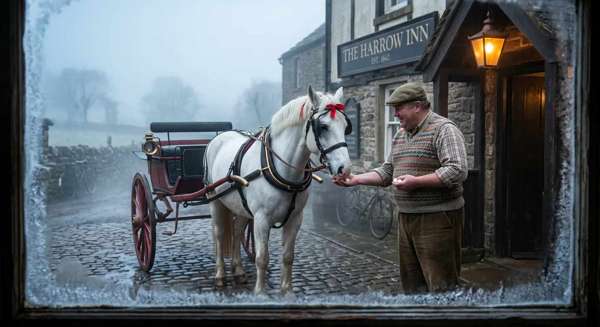
Betrayal, Rivalry, and the Windmill Dream
As winter settled its grip upon Animal Farm, Mollie the vain white mare grew ever more restless and unreliable, arriving late to her labours with convenient excuses of oversleeping and phantom ailments, though her appetite betrayed no such frailty. She would steal away at every opportunity to gaze at her own reflection in the drinking pool, preening and admiring herself with foolish contentment. But darker rumours soon circulated—rumours of forbidden contact with the enemy. Clover, motherly and concerned, confronted Mollie after witnessing her at the boundary hedge with one of Mr. Pilkington's men, the human apparently stroking her nose with familiar ease. Mollie denied everything with theatrical outrage, yet she could not meet Clover's steady gaze, and when the patient mare searched her stall, she discovered the damning evidence hidden beneath the straw: lumps of sugar and ribbons of various colours, the baubles of servitude Mollie could not relinquish. Three days later, Mollie vanished entirely, and the pigeons eventually reported her fate—standing contentedly between the shafts of a smart red-and-black dogcart outside a public-house, her coat freshly clipped and a scarlet ribbon adorning her forelock, accepting sugar from a fat publican's hand. The animals never spoke of her again.
The bitter January weather confined the animals indoors, and the pigs filled these idle weeks with planning and debate—though increasingly, debate meant bitter dispute between Snowball and Napoleon, who opposed each other on every conceivable question with tiresome predictability. Snowball dazzled the Meetings with eloquent speeches and visionary schemes drawn from agricultural journals he had studied, while Napoleon worked quietly between assemblies, cultivating support through private canvassing, particularly among the sheep, who had developed an inconvenient habit of bleating "Four legs good, two legs bad" at precisely those moments when Snowball's arguments gained momentum.
The windmill became their greatest point of contention. Snowball envisioned electrical power transforming their labours—machines to saw and slice and milk, warmth and light in every stall, a three-day working week for all. Napoleon dismissed these dreams as dangerous distractions from the practical necessity of food production. The farm divided into factions, though Benjamin alone remained unmoved, maintaining his bleak conviction that life would continue as badly as ever, windmill or none.
When the fateful vote finally arrived, Snowball's passionate oratory swept the assembly toward certain victory—until Napoleon emitted a strange, high-pitched whimper, and nine enormous dogs burst into the barn. These were the very puppies Napoleon had taken from Jessie and Bluebell, now grown into fierce wolf-like creatures wearing brass-studded collars. They drove Snowball from the farm in a terrifying chase, and he barely escaped through a gap in the hedge, never to return. Napoleon promptly abolished the Sunday Meetings, establishing instead a committee of pigs to decide all matters privately, while Squealer circulated explanations about sacrifice and discipline and the ever-present threat of Jones's return. Even Boxer, troubled but unable to articulate his doubts, adopted a new maxim: "Napoleon is always right."
Then, three weeks later, Napoleon announced that the windmill would be built after all—claiming through Squealer that the plans had always been his own, stolen by treacherous Snowball, and that his apparent opposition had merely been "tactics" to expose a dangerous enemy.
With spring ploughing now underway and Major's skull mounted reverently beside the flag, the animals prepared for the hard labour ahead, not yet comprehending how thoroughly the revolution's principles had been hollowed from within.
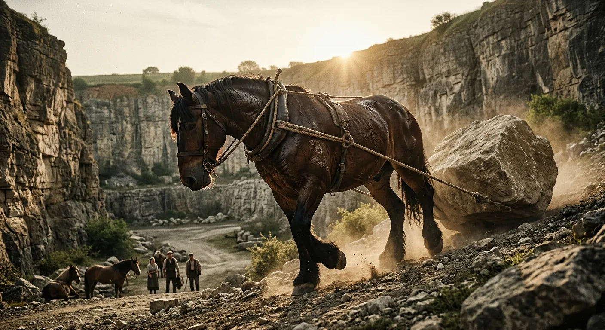
Toil, Trade, and Shifting Commandments
All that year the animals toiled with the devotion of the converted, labouring sixty hours each week through spring and summer, and when August arrived Napoleon announced that Sunday afternoons would henceforth be added to their duties. The work was strictly voluntary, of course—though any creature who absented himself would find his rations halved. Despite such exertions, the harvest fell somewhat short of the previous year's yield, and two fields that ought to have been sown with roots lay fallow because the ploughing had not been completed in time. The coming winter, it was clear to all, would prove a lean one.
The windmill presented difficulties none had foreseen. Materials lay ready to hand—good limestone from the quarry, sand and cement discovered in the outhouses—yet the animals found themselves confounded by the simple problem of breaking stone into manageable pieces. Picks and crowbars required the use of hind legs, an impossibility for any beast among them. Only after weeks of futile effort did someone conceive the notion of employing gravity itself: boulders would be dragged laboriously to the quarry's summit and toppled over the edge to shatter below. Nothing could have been accomplished without Boxer, whose tremendous strength seemed the equal of all other animals combined, and whose two maxims—"I will work harder" and "Napoleon is always right"—served him as answer to every hardship. Clover cautioned him against overexertion, but Boxer merely arranged with the cockerel to wake him earlier still.
As summer progressed, unforeseen shortages emerged: paraffin oil, nails, string, iron for horseshoes—none could be produced on the farm. One Sunday Napoleon announced a new policy: Animal Farm would engage in trade with neighbouring farms, selling hay and wheat, and later eggs, to procure necessary materials. The animals felt a dim uneasiness, recalling resolutions against commerce with humans, yet when the young pigs raised timid objections, the dogs' growling and the sheep's bleating of "Four legs good, two legs bad!" smoothed over the awkwardness. Squealer later assured everyone that no such resolution had ever existed—it was pure imagination, traceable to Snowball's lies. Mr. Whymper, a sly solicitor from Willingdon, began visiting each Monday as intermediary, and though the animals regarded him with dread, the sight of Napoleon on all fours issuing orders to a man standing on two legs stirred their pride sufficiently.
When the pigs moved into the farmhouse and began sleeping in beds, Clover sought out the Seven Commandments, only to find—with Muriel's help—that the Fourth now read: "No animal shall sleep in a bed *with sheets*." Squealer explained that sheets were the human invention prohibited, not beds themselves, and surely the animals would not begrudge the pigs their rest after such demanding brainwork?
By autumn the windmill stood half-built, and the animals circled it admiringly in their spare moments, marvelling at their own achievement—all save old Benjamin, who remarked only that donkeys live a long time. Then November brought savage winds, and one terrible night a gale rocked the farm buildings themselves. Morning revealed the flagstaff toppled, an elm uprooted like a radish, and—most devastating of all—the windmill reduced to scattered rubble. Napoleon, pacing before the ruins with tail twitching, suddenly pronounced the culprit: Snowball, that traitor, had crept back under cover of darkness to destroy their work. A death sentence was declared, rewards offered, and before the animals could fully absorb this fresh treachery, Napoleon rallied them with characteristic resolve—rebuilding would commence that very morning, continuing through winter regardless of weather, and their plans would proceed to the day.
And so the animals turned once more toward labour, their grief transformed into renewed determination, unaware that the burdens ahead would demand from them sacrifices greater still.
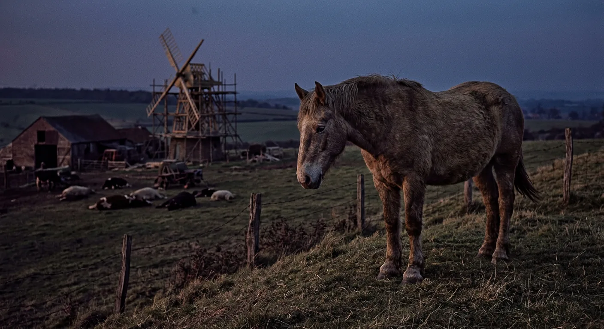
Famine, Fear, and Forced Confessions
The bitter winter descended upon Animal Farm with a cruelty that seemed almost deliberate, as though the frost and sleet conspired with the watching human world to test the animals' resolve. They labored on at the windmill's reconstruction, knowing full well that their enemies beyond the farm's boundaries would delight in any failure, and though the human beings spread the spiteful lie that the structure had collapsed due to thin walls rather than Snowball's sabotage, the animals pressed forward with thicker foundations—three feet now instead of eighteen inches, which meant hauling ever greater quantities of stone through snowdrifts that filled the quarry for weeks on end.
Cold and hunger became their constant companions. When January brought a drastic reduction in corn rations, the promise of extra potatoes proved hollow—the crop had frosted in the clamps, leaving only chaff and mangels to sustain them. Starvation loomed, yet Napoleon understood that this truth must never reach the outside world, where rumors of famine, disease, and even cannibalism already circulated. And so began an elaborate deception: selected sheep were coached to mention increased rations within earshot of Mr. Whymper, while the nearly empty storage bins were filled with sand and topped with a thin layer of grain. The intermediary departed none the wiser, carrying false reports of abundance back to the human farms.
Napoleon himself grew ever more remote, rarely emerging from the farmhouse except in ceremonial fashion, surrounded always by his escort of fierce dogs. When it became necessary to procure grain through outside trade, Squealer announced that the hens must surrender their eggs—four hundred weekly—to fulfill a contract with Whymper. The hens' outcry was immediate and desperate; they had been preparing their clutches for spring sitting, and to take the eggs now was, they protested, nothing short of murder. Led by three young Black Minorca pullets, they staged the first rebellion since Jones's expulsion, flying to the rafters and smashing their eggs on the floor below. Napoleon's response was swift and merciless: rations stopped, and any animal offering so much as a grain of corn to a hen faced death. After five days the hens capitulated. Nine had perished, their bodies buried in the orchard under the official explanation of coccidiosis.
Meanwhile, the specter of Snowball grew ever more menacing. Reports emerged that he crept onto the farm by night, stealing corn, upsetting milk-pails, trampling seed-beds, and gnawing fruit trees. Every misfortune, every broken window or blocked drain, was attributed to his invisible mischief. Napoleon conducted a theatrical investigation, snuffing the ground with his dogs in attendance, proclaiming he could detect Snowball's scent everywhere. Then came Squealer's most audacious revision yet: Snowball, he announced, had been Jones's secret agent from the very beginning, even before the Rebellion was conceived. When Boxer questioned this—recalling Snowball's bravery at the Battle of the Cowshed, his wound, his medal—Squealer rewrote history before their eyes, insisting that Napoleon himself had been the true hero, that Snowball had meant to betray them all. "If Comrade Napoleon says it, it must be right," Boxer finally conceded, though Squealer's little twinkling eyes cast an ugly look at him nonetheless.
Four days later, Napoleon summoned all animals to the yard, and there, wearing both medals he had awarded himself, surrounded by his growling dogs, he unleashed a terror none had imagined possible. Pigs were dragged forward and made to confess collaboration with Snowball; hens admitted to dreams of disobedience; a goose confessed to secreting corn; sheep admitted to murder. One by one, the dogs tore out their throats, until corpses lay heaped before Napoleon and the air hung thick with the smell of blood. The surviving animals crept away to huddle together on the knoll by the unfinished windmill, shaken to their souls. Clover gazed across the beautiful spring evening at the farm they had won for themselves, and though she could not find words, her heart ached with the knowledge that this—this reign of terror, this silencing of comrades—was not what old Major had promised them.
When at last the animals began to sing *Beasts of England*, seeking solace in its familiar strains, Squealer appeared to forbid the anthem forever, declaring the Rebellion complete and its song obsolete. A new composition took its place, but somehow it never stirred the animals' hearts as the old one had—and in that absence, something vital and irreplaceable seemed to pass from Animal Farm altogether, leaving only the cold machinery of Napoleon's rule to grind on toward whatever darkness awaited them next.
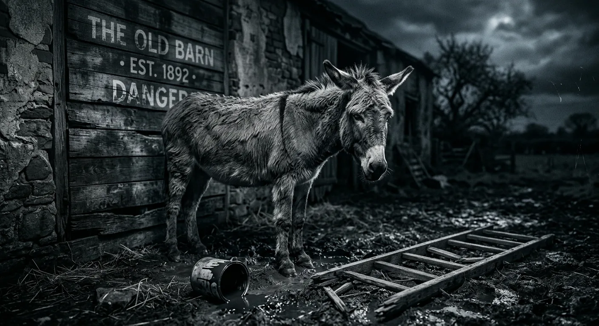
The Rise of Napoleon's Cult
In the uneasy days following the executions, a troubling doubt crept through the minds of certain animals who thought they recalled the Sixth Commandment forbidding any animal to kill another. Clover, unable to read for herself, sought Benjamin's help, but that stubborn old donkey refused as always to meddle in such affairs. When Muriel obligingly read the Commandment aloud, its words proved startling in their precision: "No animal shall kill any other animal *without cause*." Somehow those final two words had slipped clean out of memory, and with their reappearance the executions seemed justified after all—for what clearer cause could there be than the punishment of traitors who had conspired with Snowball?
The seasons turned, and the animals bent their backs to labor more grueling than any they had known, rebuilding the windmill with walls twice as thick while managing the regular toil of the farm. Squealer's Sunday recitations of production figures—two hundred per cent increases here, five hundred per cent there—could not fill empty bellies, and some animals privately wished for less arithmetic and more food, though they could no longer clearly recall what life under Jones had been. Napoleon meanwhile grew ever more remote, appearing in public perhaps once a fortnight, preceded always by a black cockerel who served as trumpeter and surrounded by his guard of dogs. He dined alone from the Crown Derby service, inhabited separate apartments in the farmhouse, and accumulated titles with the grandeur of royalty: Father of All Animals, Terror of Mankind, Protector of the Sheep-fold, Ducklings' Friend. The poet Minimus composed verses in his honor, and these were inscribed upon the barn wall opposite the Seven Commandments, beneath a portrait Squealer had painted in white.
Through Whymper, Napoleon conducted elaborate negotiations for the sale of timber, playing Frederick of Pinchfield against Pilkington of Foxwood while rumors swirled of impending attacks and Snowball's continued treacheries. The wheat crop failed due to weed seeds allegedly sown by that villain; a gander confessed complicity and promptly swallowed deadly nightshade; Snowball's very heroism at the Battle of the Cowshed was now declared a fabrication. When at last the windmill stood complete, the animals circled it in exhausted triumph—only for Napoleon to announce he had secretly sold the timber to Frederick all along, reversing every previous denunciation. The payment came in crisp five-pound notes, which the animals filed past in reverent wonder. Three days later, Whymper arrived white-faced with devastating news: the notes were forgeries.
Frederick's attack came the following morning. Fifteen men with guns drove the animals into the farm buildings, and there, in full view of their horrified gaze, two men drilled a hole at the windmill's base and packed it with explosives. The detonation erased two years of backbreaking work in an instant. Yet rage overcame despair; the animals charged in a savage counterattack that sent Frederick's men fleeing through the hedge, though not before a cow, three sheep, and two geese lay dead among many wounded. Squealer, who had been conspicuously absent during the fighting, promptly declared the engagement a glorious victory and christened it the Battle of the Windmill. Napoleon awarded himself the Order of the Green Banner, and in the celebratory feasting that followed, the matter of the forged banknotes was conveniently forgotten.
Days later, the discovery of whisky in the farmhouse cellar led to strange sounds of revelry and the spectacle of Napoleon galloping drunkenly about the yard in Jones's old bowler hat. The following morning brought alarming word that Comrade Napoleon lay dying, with Snowball naturally suspected of poisoning—though by evening the Leader had recovered sufficiently to order booklets on brewing and to designate the paddock once meant for retired animals as a barley field. And when Squealer was found one moonlit night sprawled beneath the barn wall amid a broken ladder, lantern, and overturned paint pot, only Benjamin seemed to grasp the meaning—though as ever he would say nothing. Soon after, Muriel noticed that the Fifth Commandment now read: "No animal shall drink alcohol *to excess*."
With each passing season the original promises of the Rebellion grew harder to remember, and the gap between what had been decreed and what was now inscribed upon the barn wall widened imperceptibly, as though the very words themselves had learned to shift and resettle in the night.
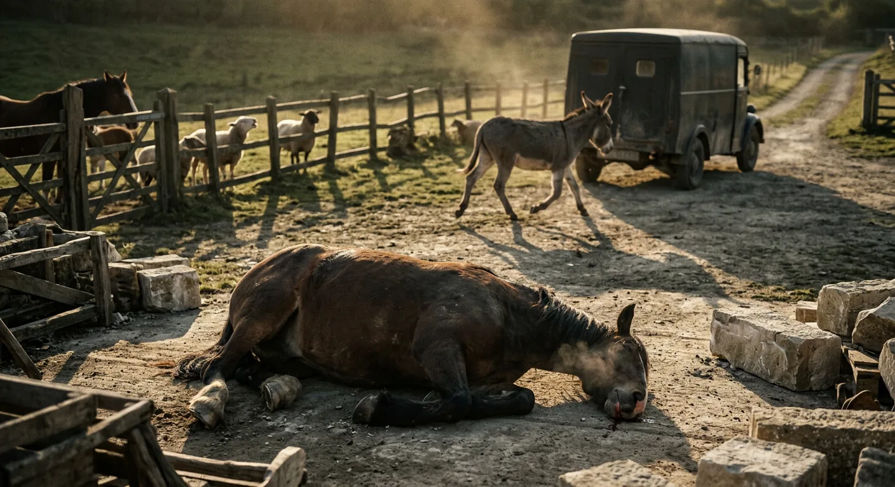
Boxer's Decline and Broken Promises
Boxer's split hoof healed slowly through that long winter, though the great horse refused to acknowledge his pain except in private moments with Clover, who prepared herb poultices and urged him, alongside Benjamin, to work less strenuously. But Boxer would hear none of it—he had fixed his heart upon one final ambition: to see the windmill well under way before his twelfth birthday arrived and retirement beckoned. The farm had long ago established generous pension arrangements, with horses entitled to five pounds of corn daily and hay in winter, perhaps even a carrot or apple on holidays, all to be enjoyed in a fenced corner of the large pasture set aside for superannuated animals. Boxer dreamed of this peaceful conclusion to his labors, though his body grew visibly diminished, his hide losing its shine, his haunches seeming to shrink even as spring arrived and failed to restore him.
Meanwhile the farm endured yet another bitter season. Rations fell again and again—Squealer, naturally, called each cut a "readjustment" rather than a reduction—while the pigs and dogs continued eating well, this disparity explained away as essential to the principles of Animalism. Squealer read figures proving life had improved since Jones's day, and the animals believed him, for they could scarcely remember those old times anymore. They knew only that they were cold and hungry and worked ceaselessly, yet surely it had been worse before. Besides, they were free now, and that made all the difference.
Thirty-one piglets had been born that autumn, all sired by Napoleon, and these young pigs received their education privately in the farmhouse kitchen, discouraged from mixing with common animals. New rules decreed that pigs must have right-of-way on paths and might wear green ribbons on Sundays. The farm needed money for the windmill machinery and for a schoolhouse for Napoleon's offspring, so eggs were sold in greater quantities and rations cut further still, while the pigs grew plump and the barley field was reserved entirely for their beer—a pint daily for each pig, half a gallon for Napoleon himself, served in the Crown Derby soup tureen.
To offset these hardships there were Spontaneous Demonstrations, weekly processions celebrating Animal Farm's triumphs, complete with songs and speeches and Squealer's statistics and the thunder of the gun. The sheep bleated down any complaints, and the animals found comfort in believing they remained their own masters. In April the farm became a Republic with Napoleon elected unanimously as President, and fresh documents conveniently emerged proving Snowball had fought openly for Jones at the Battle of the Cowshed. Moses the raven returned too, still preaching of Sugarcandy Mountain, and though the pigs called his tales lies, they permitted him to stay and even allotted him beer.
Then came the summer evening when Boxer collapsed at the quarry, blood trickling from his mouth, unable to rise. He spoke calmly of his ruined lung and his accumulated stone and his hopes that Benjamin might retire alongside him. Squealer announced that Napoleon was sending Boxer to the veterinary hospital at Willingdon. But when the van arrived days later, Benjamin—for the first time in anyone's memory—galloped across the yard shouting in alarm. He read aloud the words painted on the van's side: "Alfred Simmonds, Horse Slaughterer and Glue Boiler." The animals' cries reached Boxer, and through the small rear window his face appeared briefly before he tried desperately to kick his way free, but his great strength had finally deserted him, and the van carried him away forever.
Three days later Squealer tearfully reported that Boxer had died peacefully in hospital, whispering loyalty to Napoleon with his final breath. The van's markings, Squealer explained indignantly, were merely an old name not yet painted over by the veterinary surgeon who had purchased it. The animals accepted this, their grief softened by knowing their comrade had died happy. Napoleon ordered a wreath and announced a memorial banquet, and on the appointed evening a grocer's van delivered a large wooden crate to the farmhouse, from which came sounds of singing and quarreling and smashing glass late into the night—and word spread that the pigs had somehow found money enough for another case of whisky.
As the seasons turned and the farm's ruling class grew ever more comfortable in their privileges, the gap between the revolutionary promises and the lived reality widened into something that could no longer be ignored—or perhaps, more troublingly, something the animals had learned all too well to overlook.
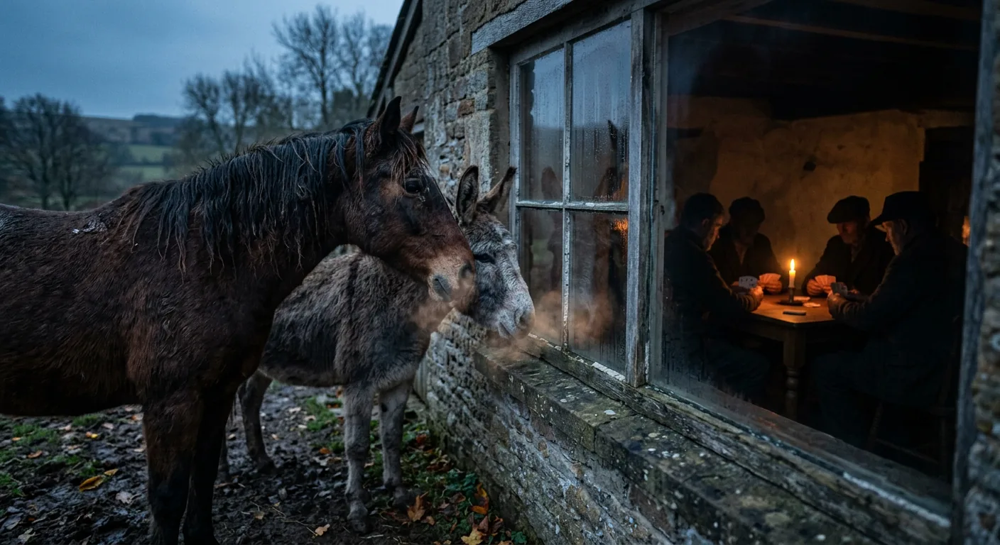
Pigs and Men Become Indistinguishable
Years slipped away like water through a cracked trough, and the seasons turned their endless wheel, and the brief lives of animals guttered out one by one. A time came when scarcely anyone remained who could recall the old days before the Rebellion—only Clover, grown stout and rheumy-eyed, two years past a retiring age that had never been honoured; only Benjamin, greyer about the muzzle and more morose since Boxer's death; only Moses the raven and a number of the pigs. Muriel was dead. Bluebell, Jessie, and Pincher were dead. Jones himself had perished in an inebriates' home in some distant corner of the county. Snowball was forgotten. Boxer was forgotten, save by the few who had loved him.
The farm had grown prosperous after its fashion—two new fields purchased from Pilkington, the windmill completed at last, a threshing machine and hay elevator standing proud among various new buildings. Yet the windmill turned not for electricity but for milling corn, and the dynamos remained a promise for some future construction, and the dreams Snowball had once kindled—electric light in the stalls, hot and cold running water, the three-day week—had been denounced by Napoleon as contrary to Animalism's true spirit. Somehow the farm had grown richer without making the animals themselves any richer, except of course for the pigs and dogs, whose appetites remained excellent and whose labours consisted of mysterious papers called files and memoranda, which were closely covered with writing and then burnt in the furnace.
The other animals lived as they had always lived: hungry, sleeping on straw, labouring in the fields, troubled by cold in winter and flies in summer. They could not remember whether things had been better or worse in the early days, for they had nothing to compare against save Squealer's figures, which invariably demonstrated improvement. Only Benjamin claimed to remember everything and to know that things never had been, nor ever could be, much better or much worse.
And yet hope persisted. The animals never forgot their pride in being the only farm in England owned and operated by animals, and when the gun boomed and the green flag fluttered, their hearts swelled with the old faith in Major's prophecy.
Then came the evening when Clover's terrified neigh brought them galloping to the yard, where they beheld the impossible: Squealer walking upright on his hind legs, and behind him a file of pigs doing the same, and finally Napoleon himself, majestic and haughty, a whip clutched in his trotter. Before any protest could form, the sheep burst forth with their new song—"Four legs good, two legs *better*!"—and the moment passed. That night Clover led Benjamin to the barn wall where the Seven Commandments had been painted, and he read aloud the single inscription that remained: ALL ANIMALS ARE EQUAL, BUT SOME ANIMALS ARE MORE EQUAL THAN OTHERS.
After that, nothing seemed strange—not the pigs carrying whips, nor Napoleon smoking a pipe in Jones's garden, nor the pigs wearing human clothes. When neighbouring farmers visited and dined with the pigs in the farmhouse, the animals crept to the window and watched. Mr. Pilkington toasted the prosperity of Animal Farm, praising its discipline and its workers who did more and ate less than any animals in the county. Napoleon rose to announce that the farm would henceforth be called The Manor Farm—its correct and original name.
As the animals gazed through the glass at the pigs and men playing cards together, something strange seemed to happen to the faces around that table. And when a quarrel erupted over an ace of spades played twice, twelve voices shouted in anger, and they were all alike. The creatures outside looked from pig to man, and from man to pig, and from pig to man again—but already it was impossible to say which was which.
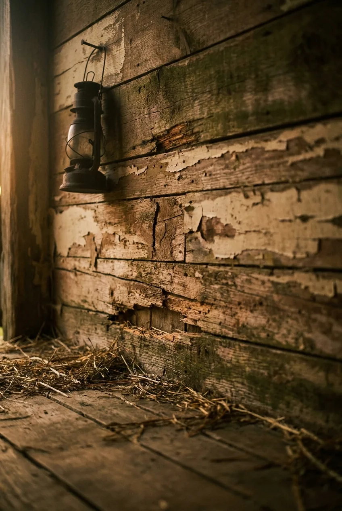